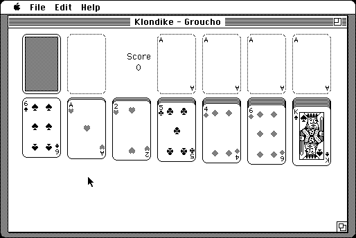

Download
Klondike7.7.1.zip (209K) Klondike 7.7.1 repackaged into a zipped hfs disk image and checksum file. The disk image can be mounted with Mini vMac.
Klondike7.7.1.sea.bin (233K) Klondike 7.7.1 in the original format.
copyright: Michael A. Casteel
mod date: Sep 21, 2001
license: shareware
official url :
Klondike Home Page
Klondike and 3 other solitaire games. For system 6.0.7 or later.

If you find these downloads useful, please consider helping the Gryphel Project, which hosts them.
Here are the md5 checksums for the downloads, signed with Gryphel Key 5:
--------- GRY SIGNED TEXT --------- d599bf31035e0b1afaebc122f7656703 Klondike7.7.1.zip bce268a16de1ed01d7bd1bcec97b88f1 Klondike7.7.1.sea.bin ------- BEGIN GRY SIGNATURE ------- Gry/4Xa8CFcUzxdN/NVSulkhzTna2KsuglFpbK//g5p0AO5+/h4L6iNjBSm8HTAR cG96m2aLpeS0xgoYXx58fiOckKENVvcc9H70mdtotSFMJWjPp4Ss7yp/vc9m4edH MLsyZNLMQFuRI9PJANdCRRdVLX7CIyMhg2pI23G81ZfrSQerJfYNvHNB06pTAh2h -------- END GRY SIGNATURE --------